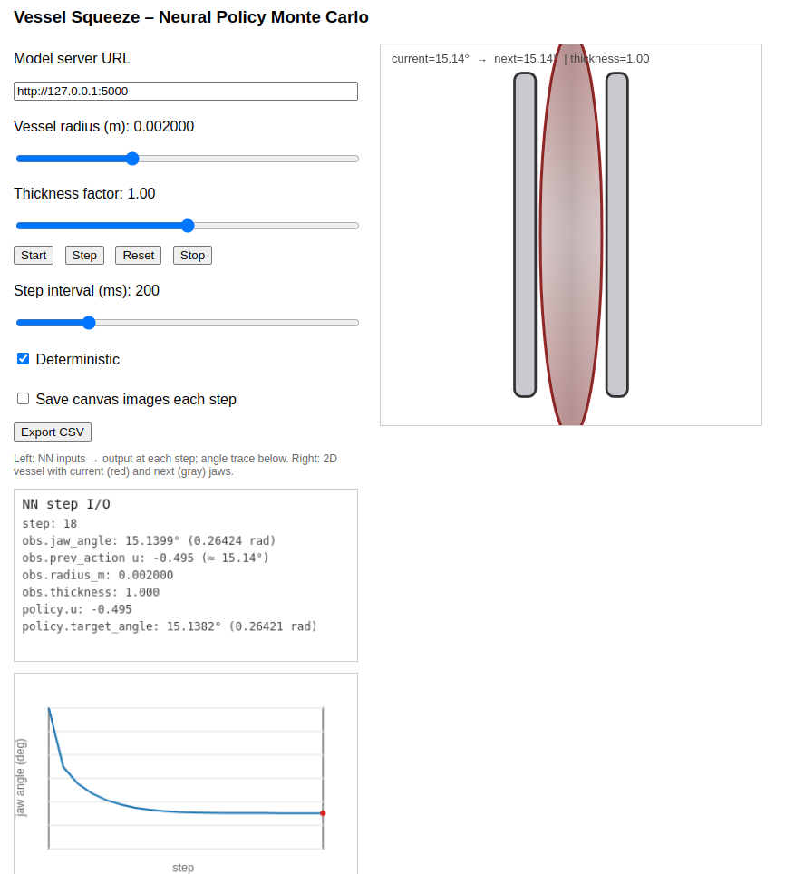
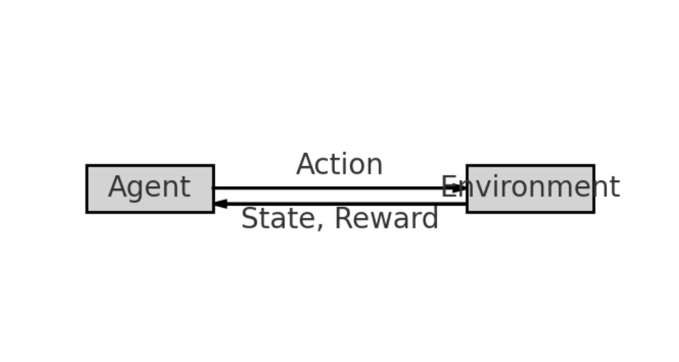
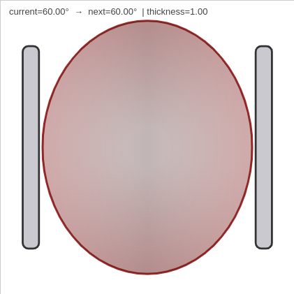
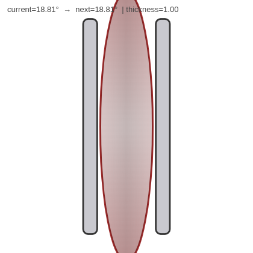
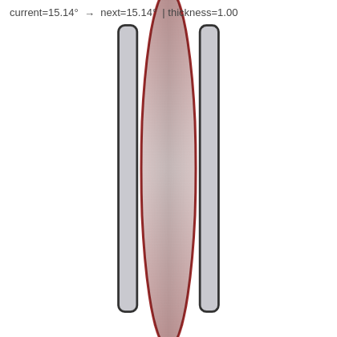
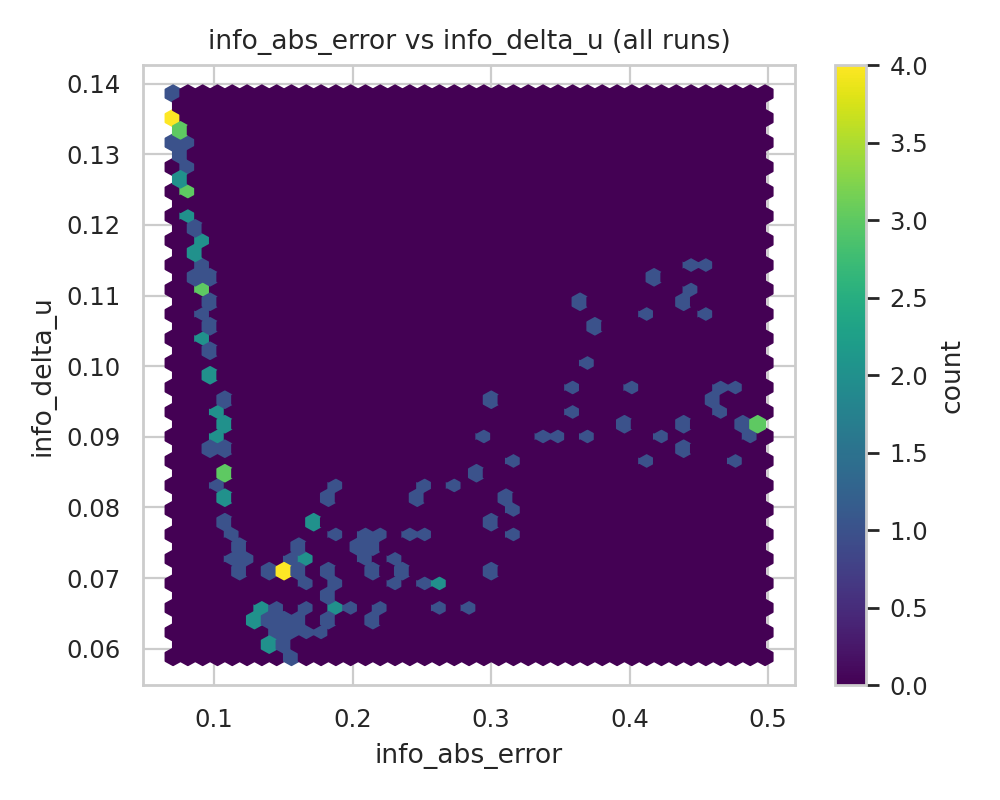

Automation in Surgical Robotics
Автоматизация в хирургичната роботика
What's automated today, what's coming next, and how it's actually built.
Какво е автоматизирано днес, какво идва, и как реално се изгражда.
David Mavrodiev · devbg IoT · 2026
Surgery is becoming a software problem
Хирургията се превръща в софтуерен проблем

da Vinci patient cart + surgeon console · Wikimedia Commons
da Vinci patient cart + конзола на хирурга · Wikimedia Commons
For a hundred years surgery was a craft, practiced by hand. For the last twenty‑five it has been remote control, with a surgeon at a console driving a robot at the table. For the next twenty‑five it will be computer‑assisted, and increasingly autonomous for the parts a machine does better than a human.
Сто години хирургията беше занаят, практикуван на ръка. През последните двадесет и пет се превърна в дистанционно управление, с хирург на конзола и робот на масата. През следващите двадесет и пет ще бъде компютърно асистирана, и все по‑често автономна за нещата, които машината прави по‑добре от човек.
Why now?
Защо сега?
~14M
robotic procedures performed since 2000
роботизирани процедури от 2000 г. насам
10+
commercial robotic platforms on the market
комерсиални роботизирани платформи на пазара
$18B
surgical robotics market projected for 2030
прогнозен пазар на хирургична роботика за 2030
~10×
surgical‑AI papers per year vs. 2015 (PubMed/IEEE search)
публикации за surgical AI на година спрямо 2015 (PubMed/IEEE)
Hardware is mature. Cost is falling. ML is finally good enough. The bottleneck is now software, data and verification.
Хардуерът съзря. Цената пада. ML най‑накрая работи достатъчно добре. Тясното гърло вече е софтуерът, данните и верификацията.
Where we're going today
Какво ще разгледаме днес
We start with what's already in real operating rooms, drill down to the code that runs on the cart, and end with where the field is heading.
Започваме с това, което вече е в реалните операционни, слизаме до кода, който работи в карта, и завършваме с накъде отива полето.
1 · The robots
1 · Роботите
What hardware is actually in operating rooms today — and how much of it is autonomous.
Какъв хардуер реално има в операционните зали днес — и колко от него е автономен.
2 · The tasks
2 · Задачите
Which surgical sub‑tasks have been automated, by whom, and which ones are still hard.
Кои хирургични подзадачи са автоматизирани, от кого, и кои все още са трудни.
3 · The stack
3 · Стекът
The simulators, frameworks and datasets you'd actually git clone to build this.
Симулаторите, frameworks и datasets, които реално би git clone‑нал, за да построиш това.
4 · The techniques
4 · Техниките
Forty years of methods stacked on top of each other — from PID controllers to foundation models.
Четиридесет години методи, натрупани един върху друг — от PID контролери до foundation models.
5 · A case study
5 · Case study
One concrete task end‑to‑end: framing, training, deploying, results.
Една конкретна задача end‑to‑end: формулиране, обучение, deployment, резултати.
6 · The road ahead
6 · Пътят напред
What's still missing, what's about to change, and how a learned model gets to a patient.
Какво още липсва, какво предстои да се промени, и как научен модел стига до пациент.
Part 1: The Robots
Част 1: Роботите
Before we talk about automation, we have to know what we're automating on. The hardware in real operating rooms today — the giants, the specialists, and the open kits used in research.
Преди да говорим за автоматизация, трябва да знаем върху какво автоматизираме. Хардуерът, който реално е в операционните зали днес — гигантите, специализираните и отворените kits в изследователските лаборатории.
Teleoperated giants
Телеуправляемите гиганти
Surgeon at a console, robot at the table. Zero autonomy. Pure motion mapping.
Хирург на конзола, робот на масата. Нула автономия. Чисто мащабиране на движенията.
These are the platforms most people picture when they hear “surgical robot.” The robot does nothing on its own — every motion is the surgeon's. What they buy you is wristed instruments inside a 1 cm port, stereo HD, motion scaling and tremor filtering. That is already a huge clinical win, and it's the foundation everything else is built on top of.
Това са платформите, които повечето хора си представят при думата „хирургичен робот“. Роботът сам не прави нищо — всяко движение е на хирурга. Какво печелиш: инструменти със ставен китка през 1 cm порт, stereo HD, мащабиране на движенията и филтриране на тремора. Това вече е огромно клинично постижение и точно върху него се гради всичко останало.

Surgeon's console. Stereo viewer, foot pedals, master grips.
Конзолата на хирурга. Стерео възприятие, педали, master grips.
Intuitive da Vinci
The market. ~9,500 systems, >14M procedures since 2000. Four wristed arms through 8 mm ports, stereo HD, motion scaling, tremor filtering. Newest variants: SP (single‑port through 2.5 cm), 5 (force feedback at the tip).
Пазарът. ~9 500 системи, >14M процедури от 2000. Четири ставени ръкава през 8 mm портове, stereo HD, мащабиране на движенията, филтриране на тремора. Най‑новите варианти: SP (single‑port през 2.5 cm), 5 (force feedback на върха).
CMR Versius
Modular: each arm rides on its own wheeled cart, so the OR team configures the layout per case. UK‑built. The first credible challenger to da Vinci, with an aggressive global rollout from 2022.
Модулен: всяко ръкаво е на отделен cart, така че екипът конфигурира разположението за всеки случай. От Великобритания. Първият сериозен конкурент на da Vinci, с агресивен глобален ролаут от 2022.
Medtronic Hugo RAS
Open architecture — the visualization tower is intentionally a separate, third‑party box. Cloud‑based case data and analytics. CE‑marked, with expanding clinical use across Europe and Asia 2024–26.
Отворена архитектура — visualization кулата е нарочно отделна, от трета страна. Cloud‑базирани case data и analytics. CE‑маркиран, с разширяваща се клинична употреба в Европа и Азия 2024–26.
Asensus Senhance
Reusable instruments — a deliberate cost play against Intuitive's per‑case razor model. Eye‑tracked camera that follows the surgeon's gaze. The only big platform with real haptic force feedback in the master grips.
Многократни инструменти — целенасочен економически ход срещу razor модела на Intuitive. Eye‑tracked камера, която следва погледа на хирурга. Единствената голяма платформа с истински хаптичен force feedback в master grips.
Specialty robots: narrow but deep
Специализирани роботи: тесни, но дълбоки
Single domain. Often already semi‑autonomous, because the task is narrow enough to verify.
Една област. Често вече полу‑автономни, защото задачата е достатъчно тясна, за да бъде верифицирана.
The teleoperated giants are general but dumb. The next class is the opposite — each robot solves one domain so well that it can do part of the procedure on its own. The trick: when the geometry is rigid and the plan comes from a CT scan, the robot can be trusted with motions a teleoperated arm cannot.
Телеуправляемите гиганти са общи, но „тъпи“. Следващият клас е обратното — всеки робот решава една област толкова добре, че може да поеме част от процедурата сам. Трикът: когато геометрията е твърда и планът идва от CT, на робота може да се вярва с движения, които телеуправляема ръка не може да направи.
Stryker Mako
Knee and hip replacement. The surgeon holds the handpiece; the robot resists any motion outside the CT‑planned cut envelope — a haptic boundary, not an autonomous cut. FDA‑cleared, ~1M procedures done. Closest thing to "autonomy in the OR" today.
Колянна и тазобедрена артропластика. Хирургът държи handpiece; роботът се съпротивлява на всяко движение извън планирания в CT envelope — хаптична граница, не автономно рязане. FDA‑одобрен, ~1 млн. процедури. Най‑близкото до „автономия в залата“ днес.
Zimmer ROSA / Smith+Nephew CORI
Same virtual‑fixture pattern as Mako, applied to spine and orthopedics. Optical tracking on bone‑mounted markers gives sub‑mm registration; ROSA also navigates pedicle screw placement.
Същият virtual‑fixture модел като Mako, приложен към гръбнак и ортопедия. Оптическо tracking на маркери по костта дава под‑милиметрова регистрация; ROSA навигира и поставяне на pedicle screws.
Intuitive Ion / Auris Monarch
Robotic bronchoscopy. A pre‑op CT scan generates a 3‑D airway map; the catheter then drives itself deep into the lung to the surgeon‑picked target, where the surgeon takes the biopsy. Autonomy in navigation, not in cutting.
Роботизирана бронхоскопия. Предоперативният CT генерира 3‑D карта на дихателните пътища; катетърът след това се самоуправлява дълбоко в белия дроб до избраната от хирурга цел, където хирургът взима биопсия. Автономия в навигацията, не в рязането.
Preceyes / ForSight
Microsurgery — retina, lymphatics. The robot downscales the surgeon's tremor by 100×, achieving sub‑10‑µm precision. Enables tasks like retinal vein cannulation that simply lie below the limit of an unaided human hand.
Микрохирургия — ретина, лимфни съдове. Роботът намалява тремора на хирурга 100× и постига точност под 10 µm. Позволява задачи като канилиране на ретинални вени, които са под предела на човешката ръка.
Open research platforms
Отворени изследователски платформи
The commercial systems we just saw are sealed boxes — you don't get to write a control loop for da Vinci. So if you want to actually publish, fine‑tune, or break things, you need an open robot. These three platforms are why nearly every surgical RL or imitation paper you read can be reproduced at all.
Комерсиалните системи, които току‑що видяхме, са затворени кутии — не можеш да пишеш control loop за da Vinci. Ако искаш да публикуваш, fine‑tune‑ваш или да чупиш нещо, трябва ти отворен робот. Тези три платформи са причината почти всяка публикация в surgical RL и imitation learning, която четеш, изобщо да може да се възпроизведе.
dVRK
da Vinci Research Kit. First‑gen da Vinci hardware donated by Intuitive (since ~2014) plus an open stack from Johns Hopkins: cisst‑saw for low‑level control, CRTK for the kinematics API, ROS bridge on top. ~50 labs worldwide — the closest thing the field has to a reference robot.
da Vinci Research Kit. Първо поколение da Vinci, дарено от Intuitive (от ~2014) плюс отворен стек от Johns Hopkins: cisst‑saw за нисконивов контрол, CRTK за кинематичния API, ROS bridge отгоре. ~50 лаборатории в света — най‑близкото до референтна платформа в полето.
RAVEN II
7‑DoF cable‑driven research robot from the University of Washington. Fully open hardware — schematics, motor specs, firmware all public. Used heavily for sim‑to‑real and tele‑surgery experiments under realistic latency.
7‑DoF cable‑driven изследователски робот от University of Washington. Напълно отворен хардуер — схеми, спецификации на мотори, firmware. Активно се използва за sim‑to‑real и телехирургични експерименти при реалистична latency.
STAR
Smart Tissue Autonomous Robot from Children's National + JHU. First published autonomous laparoscopic soft‑tissue suturing (Science Robotics, 2022) — bowel anastomosis on live pigs. Combines NIR fluorescent markers, force sensing, and a custom motion planner; the proof that autonomous soft‑tissue surgery is possible at all.
Smart Tissue Autonomous Robot от Children's National + JHU. Първото публикувано автономно лапароскопско зашиване на меки тъкани (Science Robotics, 2022) — анастомоза на черво при живи свине. Комбинира NIR флуоресцентни маркери, force sensing и собствен motion planner; доказателството, че автономната хирургия на меки тъкани изобщо е възможна.
Without these platforms the academic field does not exist.
Без тези платформи академичното поле просто не съществува.
Levels of autonomy
Нива на автономия
- Lvl 0 No autonomy. Pure teleoperation · surgeon owns every motion · da Vinci, Versius, Hugo.
- Lvl 1 Assistance. Tremor filter, motion scaling · surgeon still owns failure · all commercial systems.
- Lvl 2 Task autonomy. Robot does a sub‑task under direct supervision · shared liability · Mako, Ion, STAR.
- Lvl 3 Conditional autonomy. Robot plans & executes whole steps · manufacturer on the hook · mostly research.
- Lvl 4 High autonomy. Surgeon supervises · unresolved liability · not yet.
- Lvl 5 Full autonomy. No human in the loop · not happening soon.
- Ниво 0 Без автономия. Чиста телеоперация · хирургът притежава всяко движение · da Vinci, Versius, Hugo.
- Ниво 1 Асистиране. Филтър на тремора, мащабиране · хирургът все още отговаря за грешките · всички комерсиални системи.
- Ниво 2 Автономия на задачи. Роботът изпълнява подзадача под директен надзор · споделена отговорност · Mako, Ion, STAR.
- Ниво 3 Условна автономия. Роботът планира и изпълнява цели стъпки · производителят поема риска · предимно изследвания.
- Ниво 4 Висока автономия. Хирургът наблюдава · нерешена отговорност · още не.
- Ниво 5 Пълна автономия. Без човек в цикъла · не скоро.
Framework adapted from Yang et al., Sci. Robot. 2017. The same SAE‑style ladder used for self‑driving cars.
Framework адаптиран от Yang et al., Sci. Robot. 2017. Същата SAE‑скала, каквато се използва и за самоуправляващите се коли.
Part 2: The Tasks
Част 2: Задачите
Now we know what's on the cart. The next question is: of the thousand things a surgeon does, which ones has anyone managed to automate — and how well? We'll walk through them roughly in order of difficulty, from “hold the camera” to “cut soft tissue.”
Вече знаем какво има на карта. Следващият въпрос е: от хилядите неща, които прави един хирург, кои някой е успял да автоматизира — и колко добре? Ще ги прегледаме грубо по ред на трудност — от „държи камерата“ до „режи меки тъкани“.
Autonomous camera control
Автономно управление на камерата
The dullest job in the OR. And the easiest win.
Най‑скучната работа в залата. И най‑лесната победа.
Problem
Проблемът
An assistant holds the endoscope for hours and must anticipate the surgeon's view.
Асистент държи ендоскопа с часове и трябва да предусеща къде гледа хирургът.
Approach
Подходът
Track the tools in the image and keep them centered. Visual servoing plus a small CNN to detect instrument tips.
Следиш инструментите в кадъра и ги държиш центрирани. Visual servoing плюс малка CNN за детекция на върховете на инструментите.
Result
Резултатът
FDA‑cleared products since 2017 (Olympus EndoCUFF, Karl Storz Image1). Safe because the actuator is a camera, not a scalpel.
FDA‑одобрени продукти от 2017 (Olympus EndoCUFF, Karl Storz Image1). Безопасно, защото актуаторът е камера, не скалпел.
Why this is the first task to ship: when the worst possible failure is “you see the wrong corner of the screen,” the certification bar drops dramatically. Every harder task on the next slides moves away from this comfort zone.
Защо именно тази задача излезе първа на пазара: когато най‑лошата възможна грешка е „виждаш погрешния ъгъл на екрана“, летвата за сертификация резко пада. Всяка по‑трудна задача от следващите слайдове ни отдалечава от тази комфортна зона.
Suturing & knot tying
Зашиване и вързване на възли
Repetitive, structured, takes ~30% of operating time. The big prize.
Повтарящо се, структурирано, заема ~30% от оперативното време. Голямата награда.
Camera control was easy because nothing got cut. Suturing is the opposite — a needle goes through living tissue, on a curve, with a thread that has to end in a tight knot. Three groups have shown it can be done autonomously, and they each picked a completely different recipe.
Управлението на камерата беше лесно, защото нищо не се реже. Зашиването е обратното — игла преминава през жива тъкан, по крива, с конец, който трябва да завърши в затегнат възел. Три групи показаха, че може да се направи автономно — и всяка избра потпълно различна рецепта.
STAR (2016, 2022)
Autonomous bowel anastomosis on live pigs. Vision + force tracking + classical motion planning. No learning — pure engineering. Outperformed open and laparoscopic surgery on stitch consistency in the published trials.
Автономна анастомоза на черво при живи свине. Vision + force tracking + класическо motion planning. Без ML — чисто инженерство. Надмина отворената и лапароскопската хирургия по консистентност на бодовете в публикуваните проучвания.
Berkeley dVRK suturing
Learned needle handover and knot tying via imitation learning from human demonstrations. Trained on hundreds of teleoperated trials — works because suturing is structured and demonstration‑rich.
Научено подаване на игла и вързване на възли чрез imitation learning от човешки демонстрации. Обучени на стотици телеуправлявани опити — работи, защото зашиването е структурирано и богато на демонстрации.
JHU + Hopkins APL
Hierarchical RL. A high‑level planner picks intents like “tie a knot”; low‑level skill primitives execute. Sim‑to‑real via domain randomization — same primitives can be reused across procedures.
Йерархичен RL. Високонивов planner избира намерения като „вържи възел“; нисконивови skill primitives изпълняват. Sim‑to‑real чрез domain randomization — същите primitives могат да се използват в различни процедури.
Tissue manipulation
Манипулация на тъкани
Suturing is at least structured. Tissue manipulation is the messy cousin: the thing you grab keeps moving, deforming, and bleeding. There is no rigid model to plan against — which is exactly why this is the open frontier.
Зашиването все пак е структурирано. Манипулацията на тъкани е разхвърленият братовчед: онова, което хващаш, продължава да се движи, да се деформира и да кърви. Няма твърд модел, срещу който да планираш — точно затова това е отвореният фронт.
Retraction
Ретракция
Pulling tissue out of the way to expose the operating field. Hard because the tissue deforms unpredictably and the robot has to anticipate where the surgeon needs visibility next.
Издърпване на тъканта встрани, за да се открие оперативното поле. Трудно, защото тъканта се деформира непредвидимо и роботът трябва да предусеща къде хирургът ще иска видимост следващата секунда.
Cutting and dissection
Рязане и дисекция
Following anatomical planes between organs. Vision‑based segmentation classifies tissue in real time and steers a monopolar, bipolar, or ultrasonic energy device along the safe boundary.
Следване на анатомични слоеве между органите. Vision‑based сегментация класифицира тъканите в реално време и води монополярен, биполярен или ултразвуков енергиен инструмент по безопасната граница.
Vessel sealing and clipping
Запушване и клипсиране на съдове
Our case study later in the talk. Hemostasis means controlled tissue compression — over‑squeeze damages the wall, under‑squeeze leaks. The safety window is narrow, and that's exactly what makes it interesting for a learned policy.
Нашият case study по‑нататък. Хемостазата е контролирана компресия на тъканта — прекомерно стискане уврежда стената, недостатъчно — изтича. Прозорецът на безопасност е тесен — именно това прави задачата интересна за научена политика.
Suction and irrigation
Аспирация и иригация
Clearing blood, smoke and irrigation fluid from the field. The worst‑case failure is “the view gets messy,” not “the patient bleeds out” — which makes this an ideal first autonomy target. Easy to verify, low risk.
Почистване на кръв, дим и иригационна течност от полето. Най‑лошата възможна грешка е „изгледът се разбърква“, не „пациентът кърви“ — което я прави идеална първа цел за автономия. Лесна за верификация, нисък риск.
None of these are routinely autonomous in commercial systems. All are active research.
Нито една от тези не се прави рутинно автономно в комерсиални системи. Всички са обект на активни изследвания.
Beyond laparoscopy
Отвъд лапароскопията
So far we've stayed inside the abdomen. But the loudest autonomy stories are happening in completely different places — in bone, in the lung, in the eye. The pattern: pick a domain where the geometry is rigid, the plan comes from imaging, or the human simply cannot do it. Then automate.
Дотук стояхме в корема. Но най‑гръмките истории за автономия се случват на съвсем други места — в кост, в белия дроб, в окото. Шаблонът: избираш област, където геометрията е твърда, планът идва от образна диагностика, или човекът просто не може да я извърши. И автоматизираш.
Bone milling: Mako
Фрезоване на кост: Mako
Hard tissue, rigid registration, planned in CT. Bone is the easiest tissue you can pick: it doesn't deform, doesn't bleed, and doesn't move while you're cutting. Genuinely semi‑autonomous — the robot enforces the cut envelope.
Твърда тъкан, твърда регистрация, планиране в CT. Костта е най‑лесната тъкан, която можеш да избереш: не се деформира, не кърви и не се мести, докато режеш. Истинска полу‑автономия — роботът налага envelope на рязане.
Bronchoscopy navigation: Ion
Навигация в бронхоскопия: Ion
A thin catheter steers itself to a pre‑planned target deep in the lung; the surgeon then takes the biopsy through it. The autonomy is in the navigation — in the actual diagnostic step the human is still in charge.
Тънък катетър се самоуправлява до предварително планирана цел дълбоко в белия дроб; хирургът после взима биопсия през него. Автономията е в навигацията — при самата диагностична стъпка човекът остава главен.
Needle steering & brachytherapy
Управление на игли и брахитерапия
Bevel‑tipped flexible needles trace curves through tissue by exploiting the tip asymmetry, dodging vessels and nerves. MRI‑guided in real time — the bottleneck is MRI‑compatible hardware. Mostly research today.
Гъвкави игли със скосен връх следват криви през тъканта, използвайки асиметрията на върха, и заобикалят съдове и нерви. MRI‑guided в реално време — тесното гърло е MRI‑съвместимият хардуер. Предимно изследвания днес.
Microsurgery: Preceyes, MUSA
Микрохирургия: Preceyes, MUSA
100× motion downscaling for retinal and lymphatic surgery. Lymphatic vessels are 200–800 µm — no surgeon can hand‑suture them without a robot. The “automation” here is just making impossible tasks possible.
100× намаляване на движението за ретинална и лимфна хирургия. Лимфните съдове са 200–800 µm — никой хирург не може да ги зашива на ръка. „Автоматизацията“ тук е просто да прави невъзможното възможно.
Part 3: The Stack
Част 3: Стекът
We've seen the hardware and we've seen which sub‑tasks people try to automate on it. Now — the part most surveys skip: the actual code. The simulators, frameworks and datasets you'd git clone if you wanted to build any of this yourself.
Видяхме хардуера и видяхме кои подзадачи хората се опитват да автоматизират. Сега — частта, която повечето обзори пропускат: реалният код. Симулаторите, frameworks и datasets, които би git clone‑нал, ако искаш сам да построиш нещо от всичко това.
A surgical robot as a distributed system
Хирургичният робот като разпределена система
Three chassis, three time domains. Everything time‑critical lives inside the middle box.
Три кутии, три времеви области. Всичко критично във времето живее в средната кутия.
Next: simulators · the software ecosystem · the deployment envelope around the AI box.
Следва: симулатори · софтуерната екосистема · deployment envelope около AI кутията.
Simulators. Where everything starts.
Симулатори. Всичко започва тук.

dVRK arm in SurRoL / PyBullet
dVRK рамо в SurRoL / PyBullet
A physics engine, a URDF model, and a Python API.
Физичен engine, URDF модел и Python API.
Train 105–106 episodes before ever touching metal. Pick your simulator by whether you need GPU‑scale RL, soft tissue, or just dVRK kinematics.
Обучи 105–106 епизода преди да докоснеш метал. Избираш симулатора според нуждата: GPU‑мащабен RL, deformable тъкан, или само dVRK кинематика.
SurRoL
PyBullet‑based dVRK simulator from HK PolyU. Lightweight, runs on a laptop, ships with Gym‑style task suites for picking, peg transfer, suturing. The default starting point if you want to reproduce a paper.
PyBullet‑базиран dVRK симулатор от HK PolyU. Лек, върви на лаптоп, идва с Gym‑стил пакет задачи — хващане, peg transfer, зашиване. Стандартната отправна точка, ако искаш да възпроизведеш публикация.
AMBF
Asynchronous Multi‑Body Framework from WPI. Bullet physics core, plus FEM plugins for soft tissue — if you need deformable organs and not just rigid kinematics, this is the open option.
Asynchronous Multi‑Body Framework от WPI. Bullet physics ядро, плюс FEM плъгини за меки тъкани — ако ти трябват деформируеми органи, а не само твърда кинематика, това е отвореният вариант.
ORBIT‑Surgical
NVIDIA Isaac Lab benchmark (2024). GPU‑parallel: thousands of environments simultaneously on a single H100, plus PhysX soft‑body. The first surgical simulator built for the “millions of episodes per night” scale.
NVIDIA Isaac Lab benchmark (2024). GPU‑паралелен: хиляди среди едновременно на един H100, плюс PhysX soft‑body. Първият хирургичен симулатор, изграден за „милиони епизоди на нощ“ мащаб.
MuJoCo / Genesis
General‑purpose physics, not surgery‑specific. MuJoCo MJX brings GPU acceleration; Genesis (2024) adds differentiable multi‑physics so you can backprop through the simulator itself.
Обща физика, не хирургично‑специфична. MuJoCo MJX добавя GPU ускорение; Genesis (2024) добавя differentiable multi‑physics, така че може да разпространяваш backprop през самия симулатор.
Software ecosystem
Софтуерна екосистема
Here's the surprise for most engineers: a surgical autonomy stack is mostly tools you already use. ROS for the robot, PyTorch for the model, OpenCV for the camera, Flask or TensorRT for serving. The surgical‑specific layer on top is thin — except for the one nobody ships in a package: safety.
Изненадата за повече инженери: surgical autonomy стекът е предимно инструменти, които вече използвате. ROS за робота, PyTorch за модела, OpenCV за камерата, Flask или TensorRT за serving. Surgical‑специфичният слой отгоре е тънък — с изключение на онзи, който никой не доставя като пакет: безопасността.
Robotics layer
Robotics слой
ROS 2 · dVRK ROS
URDF/SDF models, real‑time control nodes, RViz for debugging.
ROS 2 · dVRK ROS
URDF/SDF модели, real‑time control nodes, RViz за debugging.
Learning layer
Learning слой
PyTorch / JAX
Stable‑Baselines3, RLlib, CleanRL for RL.
LeRobot (HuggingFace) for imitation.
PyTorch / JAX
Stable‑Baselines3, RLlib, CleanRL за RL.
LeRobot (HuggingFace) за imitation.
Vision layer
Vision слой
OpenCV · MMDetection
SAM2 for segmentation, DINOv2 for features.
Increasingly: surgical foundation models.
OpenCV · MMDetection
SAM2 за сегментация, DINOv2 за features.
Все по‑често: surgical foundation models.
Serving / edge
Serving / edge
Flask / FastAPI for prototypes
TensorRT, ONNX Runtime for production
NVIDIA Holoscan for surgical edge AI.
Flask / FastAPI за прототипи
TensorRT, ONNX Runtime за продукция
NVIDIA Holoscan за surgical edge AI.
Safety layer
Safety слой
Custom: runtime monitors, geometric guards, watchdog timers, rate limiters.
No "framework" exists. This is where engineering matters most.
На ръка: runtime monitors, geometric guards, watchdog timers, rate limiters.
Няма готов framework. Тук инженерството има най‑голямо значение.
Datasets
JIGSAWS · CholecT45/T50 · EndoVis · SAR‑RARP50
Suturing, cholecystectomy, segmentation, prostatectomy.
JIGSAWS · CholecT45/T50 · EndoVis · SAR‑RARP50
Зашиване, холецистектомия, сегментация, простатектомия.
Real‑time constraints in the operating room
Real‑time ограничения в операционната
Latency budget
Бюджет за latency
Control loops under 10 ms, end‑to‑end. Inference must finish before the next frame arrives. There is no time to retry, and no time to round‑trip a request to a cloud API.
Control loops под 10 ms, end‑to‑end. Inference трябва да приключи преди следващия кадър. Няма време за retry и няма време за round‑trip до cloud API.
Inference target
Inference таргет
Jetson Orin or RTX 4000 Ada sitting on the cart for the policy and segmentation networks. NVIDIA Holoscan racks for heavier vision pipelines that need 4K stereo at 60 Hz.
Jetson Orin или RTX 4000 Ada в карта за политиката и segmentation мрежите. NVIDIA Holoscan rack за по‑тежки vision pipelines, които искат 4K stereo на 60 Hz.
Determinism
Детерминизъм
Hard real‑time timing all the way down: RT‑PREEMPT Linux on the compute, EtherCAT to the motor drivers. Garbage collection pauses, page faults, swap — anything stochastic on a path between brain and motor is a bug.
Hard real‑time timing по цялата верига: RT‑PREEMPT Linux върху compute, EtherCAT към motor drivers. Garbage collection паузи, page faults, swap — всяко стохастично нещо по пътя от мозък до мотор е бъг.
Failover
Failover
If inference times out, the robot must enter a safe state in under one frame — servo to last‑good reference, alert the surgeon, hand back manual control. No retry, no “log and continue,” no exceptions to swallow.
Ако inference таймаутне, роботът трябва да влезе в безопасно състояние под един кадър — servo до last‑good reference, аларма до хирурга, връща мануален контрол. Без retry, без „log and continue“, без погълнати exceptions.
Hard real‑time control, learned models, and zero tolerance for missed deadlines — all sharing one chassis, with a patient on the table.
Hard real‑time контрол, научени модели и нулева толерансност към пропуснати срокове — всичко в едно chassis, с пациент на масата.
Part 4: The Techniques
Част 4: Техниките
We have the robots, the tasks, and the stack. Time for the methods that turn pixels and joint angles into intelligent motion — forty years of them, layered like sediment. None of the old stuff went away; it just got a new layer on top.
Имаме роботите, задачите и стека. Време за методите, които превръщат пиксели и ъгли на стави в интелигентно движение — четиридесет години от тех, наслоени като седимент. Нищо старо не изчезна — просто получи нов слой отгоре.
The technique map
Карта на техниките
| Era | Approach | Where it shines |
|---|---|---|
| 1980s+ | Classical control (PID, impedance) | Position holding, force regulation |
| 1990s+ | Visual servoing | Camera centering, tool tracking |
| 2000s+ | Motion planning (RRT, CHOMP) | Collision‑free trajectories |
| 2010s+ | Learning from demonstration | Knot tying, suturing primitives |
| 2015+ | Reinforcement learning (PPO, SAC) | Closed‑loop skills with shaped rewards |
| 2020+ | Diffusion / transformer policies | Multi‑modal demonstrations, long horizons |
| 2024+ | Surgical foundation models / VLAs | Generalist task understanding |
| Епоха | Подход | Къде блести |
|---|---|---|
| 1980+ | Класически контрол (PID, impedance) | Държане на позиция, force regulation |
| 1990+ | Visual servoing | Центриране на камерата, tool tracking |
| 2000+ | Motion planning (RRT, CHOMP) | Траектории без колизии |
| 2010+ | Learning from demonstration | Вързване на възли, suturing primitives |
| 2015+ | Reinforcement learning (PPO, SAC) | Closed‑loop умения с shaped rewards |
| 2020+ | Diffusion / transformer policies | Multi‑modal демонстрации, дълги horizons |
| 2024+ | Surgical foundation models / VLAs | Общо разбиране на задачите |
None of the older tools went away: you stack them. Modern systems use 4 or 5 of these in one pipeline.
Нито едно от старите инструменти не изчезна — натрупваш ги. Модерните системи комбинират 4–5 от тях в една pipeline.
Classical control. Still the workhorse.
Класически контрол. Все още работният кон.
Underneath every learned policy is a stack of decades‑old controllers that nobody plans to replace.
Под всяка научена политика има стек от десетилетни контролери, които никой не планира да сменя.
PID + impedance
Joint‑level setpoint tracking, plus a programmable spring at the tool tip. Why surgical robots feel compliant instead of stiff.
Setpoint tracking на ниво става, плюс програмируема пружина на върха. Затова хирургичните роботи са податливи, а не корави.
Visual servoing
$\dot q = J^{+}(s_{*} - s)$. Image error → joint velocity. Powers every autonomous camera holder shipping today.
$\dot q = J^{+}(s_{*} - s)$. Грешката в изображението → скорост на ставата. Движи всеки автономен държач на камера на пазара.
Constraint enforcement
Налагане на ограничения
Virtual fixtures. "You may move here, not there." How Mako keeps the saw inside the planned bone region.
Virtual fixtures. „Може тук, не може там.“ Така Mako държи триона в планираната зона на костта.
Why it matters for ML
Защо има значение за ML
Learned policies output references. Classical control tracks them and clamps them. The safety case lives here, not in the network.
Научените политики извеждат references. Класическият контрол ги trackва и ги clampва. Safety caseът живее тук, не в мрежата.
Imitation learning. Learn from humans.
Imitation learning. Учиш от хора.
Classical control gets you precise but rigid behavior. The next step is to learn what “good surgery” looks like from somebody who already knows how to do it. The whole field of imitation learning is built on one premise: humans are an extremely expensive, extremely high‑quality source of demonstrations.
Класическият контрол ти дава точно, но твърдо поведение. Следващата стъпка е да научиш какво е „добра хирургия“ от някой, който вече знае да я прави. Цялото поле на imitation learning стъпва върху една предпоставка: хората са крайно скъп, но крайно висококачествен източник на демонстрации.
Behavior cloning
Record (observation, action) pairs from a teacher and train a network to mimic them. Simple, but brittle: as soon as the policy drifts even slightly off the demonstrations, errors compound — the network has never seen those states.
Записваш (observation, action) двойки от учител и обучаваш мрежа да ги имитира. Просто, но крехко: в момента, в който политиката се отклони от демонстрациите, грешките се натрупват — мрежата никога не е виждала тези състояния.
ACT & Diffusion Policy
Predict chunks of future actions instead of single steps, using a transformer or a diffusion model. The chunked output is robust to noise and — since 2023 — the strongest non‑RL approach on most surgical benchmarks.
Предсказват chunks от бъдещи действия, а не единични стъпки, чрез transformer или diffusion модел. Чанкованият изход е устойчив на шум и — от 2023 насам — най‑силният non‑RL подход на повечето хирургични benchmarks.
Datasets matter most
Dataset‑ът е най‑важен
JIGSAWS remains the canonical benchmark: 103 trials of suturing and knot‑tying on dVRK, with synced kinematic and video data plus expert skill scores. The whole imitation literature is calibrated against it — and against how tiny it is.
JIGSAWS остава каноничният benchmark: 103 изпитвания със зашиване и вързване на възли върху dVRK, със синхронизирани кинематични и video данни плюс expert skill scores. Цялата imitation литература се калибрира срещу него — и срещу това колко е малък.
"In imitation learning the model is the easy part. The data collection is the entire problem."
„В imitation learning моделът е лесната част. Събирането на данни е целият проблем.“
Reinforcement learning, in one slide
Reinforcement learning в един слайд
Imitation needs an expert. What if you don't have one — or the expert isn't good enough? Then you let the agent discover the policy itself, by trial and error against a simulator and a reward.
Imitation иска експерт. Но ако нямаш — или експертът не е достатъчно добър? Тогава оставяш агента сам да открие политиката, чрез проба и грешка срещу симулатор и reward.

Agent picks actions, observes states, receives rewards.
Агентът избира actions, наблюдава states, получава rewards.
Model‑free (PPO, SAC, DQN) — learn from trial & error.
Model‑based (Dreamer, MuZero) — learn a world model, plan inside it.
Model‑free (PPO, SAC, DQN) — учи от проба и грешка.
Model‑based (Dreamer, MuZero) — учи модел на света, планира в него.
Surgical RL today is dominated by PPO: stable, continuous control, well‑understood. HER shows up for goal‑conditioned tasks with sparse rewards.
Surgical RL днес е доминиран от PPO: стабилен, непрекъснат контрол, добре разбран. HER излиза на преден план при goal‑conditioned задачи с редки rewards.
Sim‑to‑real & domain randomization
Sim‑to‑real и domain randomization
The problem. You can't iterate RL on real tissue. But policies trained in simulation rarely work on real robots.
Проблемът. Не можеш да обучаваш RL върху истинска тъкан. Но политики, обучени в симулация, рядко работят на истински роботи.
The trick. Randomize physics, lighting, geometry, sensor noise every episode. The policy learns to generalize across worlds: including the real one it's never seen.
Трикът. Randomize на физика, осветление, геометрия, sensor noise на всеки епизод. Политиката се учи да обобщава между светове — включително истинския, който никога не е виждала.
| Randomized | Typical range (clip‑application example) |
|---|---|
| Vessel radius | 1.5 – 3.0 mm |
| Friction coefficient | 0.3 – 1.2 |
| Damping | 0.02 – 0.10 |
| Sensing noise | σ ≈ 0.002 rad |
| Pose tilt | ± 1.1° |
| Randomized | Типичен диапазон (clip‑application пример) |
|---|---|
| Радиус на съда | 1.5 – 3.0 mm |
| Коеф. на триене | 0.3 – 1.2 |
| Damping | 0.02 – 0.10 |
| Sensing noise | σ ≈ 0.002 rad |
| Наклон на pose | ± 1.1° |
The new wave. Foundation models.
Новата вълна. Foundation models.
Everything we've discussed so far trains one policy for one task on one robot. The current shift: pre‑train one giant model on every endoscopic video and kinematic trace ever recorded, then fine‑tune it for whatever you actually need. Same playbook that took NLP from 2017 to ChatGPT.
Всичко до тук обучава една политика за една задача върху един робот. Идващата промяна: pre‑train‑ваш един гигантски модел върху всяко ендоскопско видео и всяка кинематична следа, които са били записвани, и го fine‑tune‑ваш за всяка конкретна задача. Същият подход, който отведе NLP от 2017 до ChatGPT.
RT‑2 / OpenVLA
Vision‑language‑action models pre‑trained on millions of robot trajectories from many embodiments. You give them an image and a sentence — “pick up the green clip” — they output joint commands. The first credible attempt at a generalist robot brain.
Vision‑language‑action модели, предварително обучени върху милиони робот траектории от различни роботи. Даваш им изображение и изречение — „вземи зеления клипс“ — те връщат команди към ставите. Първият сериозен опит за общ роботен мозък.
SurgicalSAM, EndoFM
Domain‑specific foundation models for instrument and tissue segmentation in endoscopic video. Fine‑tuned from generic vision foundations (SAM, DINO) on tens of thousands of annotated surgical frames.
Domain‑specific foundation models за сегментация на инструменти и тъкани в ендоскопско видео. Fine‑tune‑вани от общи vision foundations (SAM, DINO) върху десетки хиляди анотирани хирургични кадри.
CholecT45 / EndoVis
Public datasets that fuel the pre‑training era — tens of thousands of annotated cholecystectomy and laparoscopy videos. Still many orders of magnitude smaller than ImageNet, which is the field's structural problem.
Публични datasets, които захранват ерата на pre‑training — десетки хиляди анотирани видеа от холецистектомия и лапароскопия. Все още много порядъци по‑малки от ImageNet — структурният проблем на полето.
2024 was when the field stopped training from scratch and started fine‑tuning.
2024 беше годината, в която полето спря да обучава от нула и започна да fine‑tune‑ва.
Part 5: A Concrete Example
Част 5: Конкретен пример
Enough surveys. Let's pick one task and follow it from procedure picture to trained policy to deployment envelope. Everything we've talked about — PPO, SurRoL, reward shaping, runtime monitors — is going to show up here in the same slide deck, applied to one job.
Доста обзор. Сега избираме една задача и я проследяваме от картинка на процедурата до обучена политика и deployment envelope. Всичко, за което говорихме — PPO, SurRoL, reward shaping, runtime monitors — ще се яви в едно място, приложено към една задача.
Vascular clip application
Поставяне на съдов клипс


Dissect → plan → approach → center → squeeze → fire.
Дисекция → план → доближаване → центриране → стискане → изстрелване.
We zoom into one step: the pre‑firing squeeze. Sub‑mm precision, narrow safety window, must hold steady before the clip is fired.
Фокусираме върху една стъпка: стискането преди изстрелване. Под‑милиметрова точност, тесен прозорец на безопасност, трябва да задържи стабилно преди да се изстреля клипсът.
How we frame it
Как формулираме задачата
The hardest part of applying RL to a real task is rarely training. It's writing the four boxes below: what does the agent see, what does it do, what counts as good, and where does it learn? Get those wrong and no algorithm will save you.
Най‑трудната част в прилагането на RL върху реална задача рядко е обучението. Тя е да напишеш четирите кутии по‑долу: какво вижда агентът, какво прави, какво се счита за добро и къде учи? Ако тези са грешни, никакъв алгоритъм няма да те спаси.
State (4‑D)
[ θ, uprev, r, τ ]
Jaw angle, last action, vessel radius, wall thickness.
Ангел на челюстите, предишно action, радиус на съда, дебелина на стената.
Action (1‑D continuous)
Action (1‑D непрекъснато)
u ∈ [−1, +1] → θcmd
A single continuous knob that sets the commanded jaw angle.
Един непрекъснат параметър, който задава желания ангел на челюстите.
Reward (sculpted)
Reward (формована)
+ accuracy. Quadratic penalty on (θ − θ*)².
− safety. Large penalty near the damage threshold.
− smoothness. Penalty on |Δu|.
+ success bonus for a stable hold.
+ точност. Квадратична пенализация върху (θ − θ*)².
− безопасност. Голяма пенализация близо до прага на увреждане.
− плавност. Пенализация върху |Δu|.
+ бонус за успех при стабилно задържане.
Setup
Setup
Algorithm. PPO, model‑free policy gradient.
Simulator. SurRoL / PyBullet.
Training. ~400k steps on a laptop GPU.
Алгоритъм. PPO, model‑free policy gradient.
Симулатор. SurRoL / PyBullet.
Обучение. ~400k стъпки на laptop GPU.
The learned behavior
Наученото поведение
Approach fast → freeze: four frames of the policy squeezing a vessel.
Бързо приближаване → задържане: четири кадъра от политиката, стискаща съд.

t = 0 · jaws open
t = 0 · отворени челюсти

t = 5 · approaching
t = 5 · приближаване
t = 10 · entering band
t = 10 · влизане в зоната

t = 19 · held steady
t = 19 · стабилно задържане
Nobody programmed these two phases: they emerged from the reward function.
Никой не е програмирал тези две фази — те възникнаха от reward функцията.
Wrapping the policy for deployment
Опаковане на политиката за deployment
A learned policy never reaches a patient on its own. It sits inside a deterministic envelope.
Научената политика никога не стига до пациент сама. Тя живее в детерминистична обвивка.
Policy
Policy
PPO network. Outputs a reference jaw angle, not a torque or a velocity. Runs at 50 Hz — fast enough to keep up with the surgeon, slow enough that the supervisor below can sanity‑check every step.
PPO мрежа. Извежда reference ангел, не torque или скорост. Работи на 50 Hz — достатъчно бързо, за да върви с хирурга, и достатъчно бавно, за да може supervisorът отдолу да проверява всяка стъпка.
Geometric guard
Geometric guard
A pure‑code clamp on θcmd: never inside the damage band, never outside the workspace, never moving faster than the actuator allows. No ML, ~50 lines, easy to certify under IEC 62304.
Чистокодов clamp върху θcmd: никога в зоната на увреждане, никога извън workspace, никога по‑бърз от това, което актуаторът позволява. Без ML, ~50 реда, лесен за сертификация по IEC 62304.
Runtime monitor
Runtime monitor
Watches |Δu|, action entropy and prediction confidence in real time. If the policy starts thrashing or its confidence collapses, the monitor trips it out of the loop — the network is treated as a fallible component, not a source of truth.
Следи |Δu|, action entropy и prediction confidence в реално време. Ако политиката започне да припрясва или confidence и падне, monitorът я изключва от цикъла — мрежата се третира като грешим компонент, не като източник на истина.
Watchdog & safe state
Watchdog и safe state
If inference misses even one frame, a hardware watchdog timer fires: the controller servos to the last‑good reference, the surgeon gets an audible alert, manual control is handed back. The system is failure‑tolerant by design, not by hope.
Ако inference пропусне дори един кадър, хардуерен watchdog таймер се изпълнява: контролерът прави servo до last‑good reference, хирургът получава звукова аларма, мануалният контрол се връща. Системата е failure‑tolerant по дизайн, не по надежда.
The interesting engineering isn't the network. It's the three boxes around it.
Интересната инженерна работа не е в мрежата. Тя е в трите кутии около нея.
What it gave us
Какво получихме

Two clusters emerged, untouched by hand:
Два клъстера възникнаха сами, без намеса:
Approach: large error, large action.
Hold: tiny error, near‑zero action.
Приближаване: голяма грешка, голямо action.
Задържане: минимална грешка, почти нулево action.
Sim only. Never touched a real robot. One narrow sub‑task done well.
Само в симулация. Никога върху истински робот. Една тясна подзадача, изпълнена добре.
Part 6: The Road Ahead
Част 6: Пътят напред
We just trained one policy for one sub‑task in simulation. The honest next question is: what would it take to get a policy like this to a real patient? Two slides on what's still hard, two slides on where the field is going, and one on the road from prototype to OR.
Току‑що обучихме една политика за една подзадача в симулация. Честният следващ въпрос е: какво би трябвало да се случи, за да стигне такава политика до реален пациент? Два слайда за това, което все още е трудно, два за накъде отива полето, и един за пътя от прототип до операционна зала.
Open challenges
Отворени предизвикателства
The case study worked because we kept the problem small and stayed in simulation. The moment you scale either direction — broader behavior, real tissue — the field hits the same five walls. None of these are research curiosities; each one is a project plan for the next decade.
Case study‑то сработи, защото запазихме проблема малък и останахме в симулация. В момента, в който скалираш в която и да е посока — по‑широко поведение, реална тъкан — полето се ударя в същите пет стени. Нито едно от тези не е изследователска любопитка — всяко е план за работа за следващото десетилетие.
Sim‑to‑real gap
Sim‑to‑real пропаст
Soft tissue deforms, organs slip on each other, blood and smoke obscure vision. Almost none of this matches the simulator the policy was trained in. Domain randomization helps; it doesn't close the gap.
Меките тъкани се деформират, органите се плъзгат един върху друг, кръв и дим замъгляват зрението. Почти нищо от това не съвпада със симулатора, в който е обучена политиката. Domain randomization помага; не затваря пропастта.
Force / haptic sensing
Force / haptic sensing
Most surgical robots have no real force feedback at the tool tip — cable‑driven mechanisms hide it. You can't safely squeeze, pull, or suture without knowing the force you're applying.
Повечето хирургични роботи нямат истински force feedback на върха на инструмента — cable‑driven механизмите го скриват. Не можеш безопасно да стискаш, дърпаш или зашиваш, без да знаеш силата.
Generalization across patients
Генерализация между пациенти
A policy trained on one anatomy can fail on another — organ size, position, fat thickness, prior surgery all change the picture. Big, diverse datasets fix it; we don't have them yet.
Политика, обучена на една анатомия, може да се провали на друга — размер на органа, позиция, дебелина на мазнината, предишни операции — всичко променя картината. Големи и разнообразни datasets решават проблема; не ги имаме още.
Verification & regulation
Верификация и регулация
How do you certify a learned controller under IEC 62304 / FDA SaMD when the function is a 50M‑parameter network? Guidance is still being written. Today's early answers: SBOMs, model cards, and runtime monitors that are certifiable.
Как се сертифицира научен контролер по IEC 62304 / FDA SaMD, когато функцията е мрежа с 50M параметра? Ръководствата още се пишат. Ранните отговори: SBOMs, model cards и runtime monitors, които могат да се сертифицират.
Data scarcity
Недостиг на данни
JIGSAWS = 103 demonstrations. ImageNet had 14M. The gap is five orders of magnitude. Surgical recordings are also sensitive personal health data — hard to share, even between hospitals.
JIGSAWS = 103 демонстрации. ImageNet имаше 14M. Пропастта е пет порядъка. Хирургичните записи са и чувствителни лични здравни данни — трудно за споделяне дори между болници.
Where the field is heading
Накъде отива полето
The challenges are real, but the answers are taking shape. Don't expect a robot that performs an operation. Expect one that watches the surgeon, takes over the boring parts, and uses the same kind of pre‑trained models we use elsewhere in AI today.
Предизвикателствата са реални, но отговорите се оформят. Не очаквайте робот, който извършва операция. Очаквайте робот, който наблюдава хирурга, поема скучните части и използва същия вид pre‑trained модели, каквито вече използваме навсякъде в AI.
Surgical copilots
Surgical copilots
Models that watch the procedure live, name the anatomy in real time, suggest the next step, and offer to take over routine actions. Think Copilot for code — except the editor is an OR.
Модели, които наблюдават процедурата на живо, разпознават анатомията в реално време, предлагат следващата стъпка и поемат рутинни действия. Copilot за код, но редакторът е операционна.
Generalist foundation models
Generalist foundation models
Pre‑trained on every endoscopic video and kinematic trace ever recorded, then fine‑tuned per task. The same playbook that took NLP from 2017 to ChatGPT — just with five fewer orders of magnitude of data, for now.
Предварително обучени върху всяко ендоскопско видео и всяка кинематична следа, след което fine‑tune‑вани за всяка задача. Същият подход, който отведе NLP от 2017 до ChatGPT — просто с пет порядъка по‑малко данни, засега.
Multi‑modal sensing
Multi‑modal sensing
Force, vision, intra‑op ultrasound, and ICG fluorescence fused into one perception stack. Each modality answers a question the others can't — force tells you what tissue is doing, fluorescence tells you where the blood goes.
Force, vision, интраоперативен ултразвук и ICG флуоресценция, слети в един perception stack. Всяка модалност отговаря на въпрос, на който другите не могат — force казва какво прави тъканта, флуоресценцията — къде тече кръвта.
Last‑foot autonomy
Last‑foot автономия
The realistic near‑term: the surgeon does the surgery, the robot does the boring 80%. Suction, retraction, camera holding, irrigation, simple closure — all good targets for narrow autonomy that don't require solving surgery.
Реалистичното в краткосрочен план: хирургът прави хирургията, роботът поема скучните 80%. Аспирация, ретракция, държане на камерата, иригация, прости зашивания — всички добри цели за тясна автономия, която не изисква да решаваш хирургията.
The road to the OR
Пътят до операционната
There is no shortcut from a working policy in simulation to a deployed one in the OR. There's a ladder, and every rung filters out things you didn't think you'd missed. Skipping rungs is how patients get hurt.
Няма къси пътища от работеща политика в симулация до deployment в залата. Има стълба и всяко стъпало филтрира неща, които не си знаел, че си пропуснал. Прескачането на стъпала е начинът да застраши пациент.
- Step 1 Simulation and unit tests.
- Step 2 Hardware‑in‑the‑loop with realistic latency.
- Step 3 Benchtop tissue analogs with force and flow sensors.
- Step 4 Cadaver and animal preclinical labs.
- Step 5 IRB‑supervised limited clinical trial.
- Step 6 Deployment under strict stop rules.
- Стъпка 1 Симулация и unit тестове.
- Стъпка 2 Hardware‑in‑the‑loop с реалистична latency.
- Стъпка 3 Benchtop изкуствени тъкани със силови и flow сензори.
- Стъпка 4 Cadaver и животински preclinical лаборатории.
- Стъпка 5 IRB‑надзиравано ограничено клинично проучване.
- Стъпка 6 Deployment под строги stop правила.
Years of engineering. And that's the right pace.
Години инженерство. И това е правилното темпо.
Takeaways
Какво да запомните
If only three things stay with you from the last hour, let it be these. They are the answers to “what does autonomy in surgery actually look like in 2026,” “do I need a new tech stack to build it,” and “where does the safety actually live.”
Ако само три неща останат в главата ви от изминалия час, нека бъдат тези. Те са отговорите на „как изглежда хирургичната автономия в 2026“, „трябва ли ми нов технологичен стек, за да я построя“ и „къде реално живее безопасността“.
1 · Narrow and deep
1 · Тясно и дълбоко
Surgical autonomy is narrow and deep, not broad. Mako, Ion, STAR each automate one thing.
Хирургичната автономия е тясна и дълбока, не широка. Mako, Ion, STAR — всеки автоматизира едно нещо.
2 · Familiar stack
2 · Познат стек
The stack is mostly tools you already know. PyTorch, ROS, Flask, Jetson, plus a few surgical‑specific simulators.
Стекът е предимно инструменти, които вече познавате. PyTorch, ROS, Flask, Jetson, плюс няколко специфични симулатора.
3 · Safety is plumbing
3 · Безопасността е водопровод
Safety isn't a feature. It's the reward function, the runtime monitor, and the V&V ladder.
Безопасността не е feature. Тя е в reward function, в runtime monitor и в V&V стълбата.
Thank you.
Благодаря.
Questions?
Въпроси?
David Mavrodiev
github.com/David-Mavrodiev